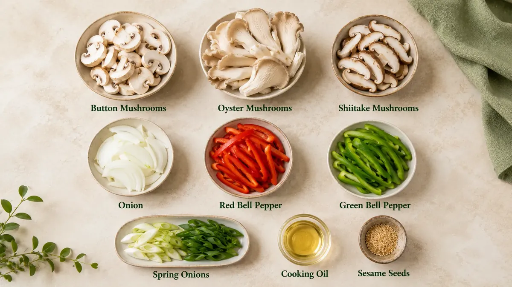
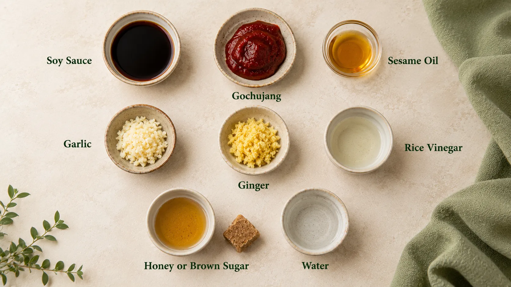
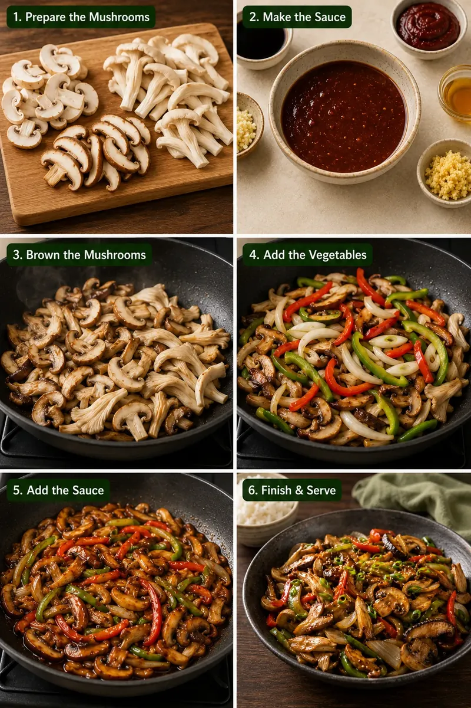

About This Korean Mushroom Stir-Fry
Mushrooms are especially good at absorbing strong flavours, which makes them perfect for a quick stir-fry.
In this recipe, a mixture of mushrooms is cooked over fairly high heat and coated in a simple sauce made with soy sauce, garlic, sesame oil, gochujang, and a little sweetness for balance. The result is a dish that is savoury, mildly spicy, and rich in umami.
The best part is the contrast in texture. Button mushrooms stay juicy, oyster mushrooms become tender around the edges, and shiitake mushrooms bring a deeper savoury flavour.
You don't need all three varieties to make the recipe. Use whichever fresh mushrooms are easily available to you, or combine two varieties for more texture.
Ingredients

For the Stir-Fry
Mushroom note
You can use approximately 400–450 g of any mushroom combination if all three varieties are not available. Button and oyster mushrooms alone also work well.
For the Korean-Style Sauce

Add all the sauce ingredients to a small bowl and mix until the gochujang is completely incorporated.
Taste before adding extra salt. Soy sauce and gochujang already contribute significant saltiness to the dish.
Step-by-Step Recipe
Step 1: Prepare the Mushrooms
Clean the mushrooms carefully.
Instead of soaking them in water, wipe away visible dirt with a slightly damp kitchen towel or clean them quickly and dry them thoroughly. Excess surface moisture can make it harder for the mushrooms to brown properly.
Slice the button and shiitake mushrooms. Tear large oyster mushroom clusters gently into smaller pieces.
Try not to cut everything into exactly the same shape. Different shapes and sizes create a more interesting final texture.
Step 2: Make the Sauce
In a small bowl, combine:
soy sauce, gochujang, sesame oil, garlic, ginger, rice vinegar, honey or brown sugar, and water.
Mix well until you have a smooth reddish-brown sauce.
Taste a very small amount and adjust according to preference. Add a little more gochujang for heat or a small amount of sweetness if the sauce tastes too sharp.
Keep the sauce ready beside the stove. Once stir-frying begins, the cooking process moves quickly.
Step 3: Brown the Mushrooms
Heat a large frying pan or wok over medium-high to high heat.
Add the neutral cooking oil, followed by the mushrooms. If your pan is small, cook the mushrooms in two batches rather than crowding them.
Spread them across the pan and allow them to cook briefly before stirring.
Continue cooking until the mushrooms release some moisture, the liquid begins to evaporate, and the edges develop light golden-brown colour.
This step builds much of the flavour of the finished dish, so don't rush it.
Step 4: Add the Vegetables
Add the sliced onion and the white parts of the spring onions.
Stir-fry for about 1–2 minutes, then add the red and green bell peppers.
Continue cooking briefly. The vegetables should soften slightly but still retain some colour and texture.
The goal is a lively stir-fry, not vegetables cooked until completely soft.
Step 5: Add the Korean-Style Sauce
Reduce the heat slightly and pour the prepared sauce into the pan.
Toss everything together so that the mushrooms and vegetables are evenly coated.
Cook for another 1–2 minutes, stirring frequently, until the sauce becomes glossy and lightly coats the mushrooms.
Avoid cooking for too long after adding the sauce. Over-reducing can make a soy-based sauce excessively salty.
Step 6: Finish and Serve
Turn off the heat.
Add most of the green parts of the spring onions and toss once more.
Transfer the mushroom stir-fry to a serving bowl and finish with:
Serve immediately while the mushrooms are hot and glossy.

What to Serve It With
This Korean mushroom stir-fry works well with steamed short-grain rice or jasmine rice for a simple meal.
You can also serve it with noodles, use it as a filling for lettuce wraps, add it to a rice bowl with cucumber and other vegetables, or serve a smaller portion as part of a larger Korean-inspired meal.
For a more substantial meal, pair it with tofu or another protein source rather than relying on mushrooms alone as a high-protein ingredient.
Tips for Better Mushroom Stir-Fry
The difference between a good mushroom stir-fry and a watery one often comes down to a few simple details:
The Bottom Line
A good Korean-style mushroom stir-fry doesn't need a long ingredient list or complicated cooking technique.
The key is to brown the mushrooms properly, keep some texture in the vegetables, and add the sauce near the end so it coats the ingredients without becoming too salty or heavy.
With a bowl of rice, it makes a quick, flavourful meal—and using a mixture of mushrooms makes every bite a little different.